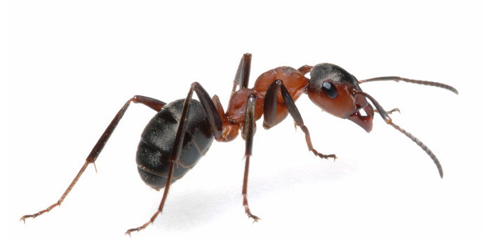
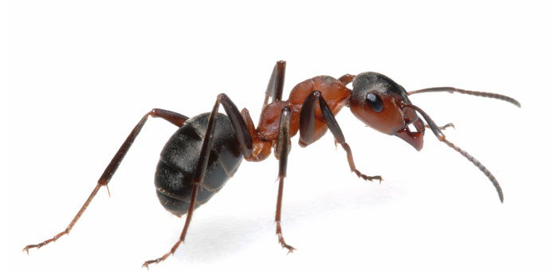
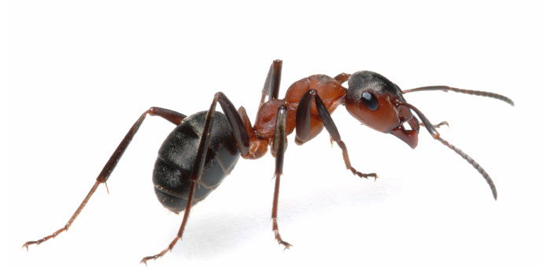

Welcome to this simple implementation of an elegant idea. Langton's Ant was created by Chris Langton in 1986, and is an example of a cellular automaton. Under Langton's original design, the "ant" begin its journey on a grid with squares that are colored white or black. It follows two simple rules:
This engine has incorporated two generalizations that Langton's original does not include.
Start: sets off the ant's movement. If you've added ants, the engine will use these. If you've added none, it will add one ant in the middle of the grid.
Stop: pauses the ant movement.
Step: sets off one iteration of ant movement.
Reset: clears the board of all ants, and sets all squares back to their original state.
